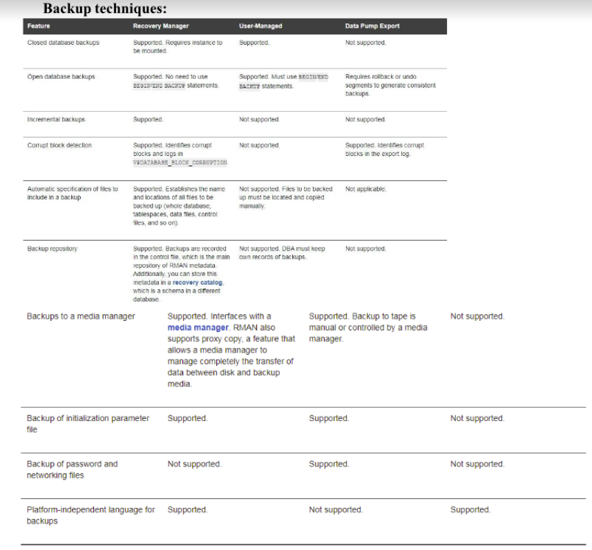

AIM:
To understand the concept of database backups.
PROCEDURE:
1. Select the system / application.
2. Include the backup methods.
3. Design the system for database backups.
BACKUP:
A backup is a copy of data. It can include critical parts of the
database such as data files, the server parameter file, and the control
file. A sample backup and recovery scenario involves a failed disk drive
causing data file loss. If a backup of the lost file exists, you can
restore and recover it. Media recovery involves operations to restore data
to its pre-loss state.
RMAN is integrated with Oracle Secure Backup, providing reliable and
centralized tape backup management, protecting both file system data and
Oracle Database files. The Oracle Secure Backup SBT interface allows RMAN
to back up and restore database files to tape and internet-based Web
Services such as Amazon S3. Oracle Secure Backup supports most tape drives
and tape libraries in SAN and SCSI environments.
DATABASE BACKUPS:
Database backups can be physical or logical.
Physical backups are copies of database files and are crucial for
backup and recovery strategies. RMAN or operating system utilities can
create these backups.
Logical backups contain logical data like tables and stored
procedures. Tools like Oracle Data Pump Export can extract logical data
and save it in binary files. Logical backups supplement physical
backups.
PHYSICAL BACKUPS:
Physical backups are copies of physical files used for storing and
recovering the database. These include data files, control files, and
archived redo logs. Physical backups copy these files to a separate
location, either on disk or offline storage media such as tape.
LOGICAL BACKUPS:
Logical backups include data such as tables and stored procedures.
Oracle Data Pump can export this data into binary files for future import.
The expdp and impdp command-line clients use the
DBMS_DATAPUMP and DBMS_METADATA PL/SQL packages.
WHOLE AND PARTIAL DATABASE BACKUPS:
A whole database backup includes every data file plus the control
file. This is the most common type of backup. Partial database backups
include subsets of the database, such as specific tablespaces or data
files.
Tablespace backups require the database to be in ARCHIVELOG mode to
ensure consistency with the rest of the database.

BACKUP ADMINISTRATION TASKS:
• Planning and testing responses to different types of
failures
• Configuring the database environment for backup and
recovery
• Setting up a backup schedule
• Monitoring the backup and recovery environment
• Troubleshooting backup problems
• Recovering from data loss if needed
BACKUP SETS:
RMAN can create backups in a format called a backup set. This set
contains data from data files, archived redo logs, control files, or the
server parameter file. The smallest unit of a backup set is a binary file
called a backup piece. Backup sets are the only format RMAN uses for
writing backups to sequential devices like tape drives.
Backup sets enable continuous tape streaming. For instance, RMAN can
combine blocks from disks of varying speeds into one backup set to
maintain a constant input stream for the tape device.
Image copies are useful for disk backups as they can be updated
incrementally and recovered.